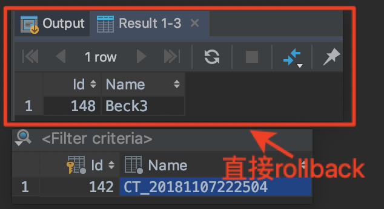
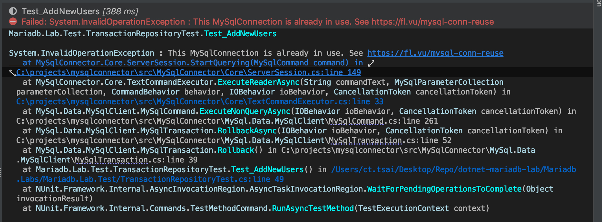
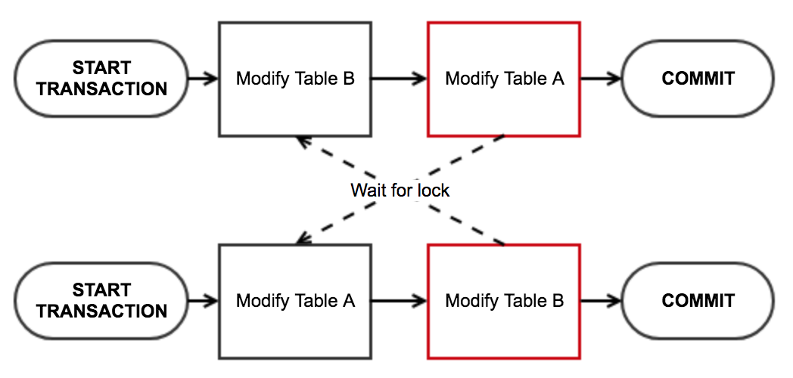

<!-- build time:Mon Sep 30 2019 16:23:13 GMT+0000 (Coordinated Universal Time) --><!DOCTYPE HTML><html lang="zh-TW"><head><meta name="generator" content="Hexo 3.9.0"><meta charset="utf-8"><meta name="keywords" content="MariaDB/MySQL Transaction with .NET Standard, blackie tsai, blackie1019"><meta name="description" content="介紹如何使用 MySqlConnector 讓 .NET Standard/.NET Core 可以對 MariaDB/MySQL 進行 Transaction 與 TransactionScope 操作．程式碼實作參考dotnet-mar"><meta http-equiv="X-UA-Compatible" content="IE=edge"><meta name="viewport" content="width=device-width,initial-scale=1,user-scalable=no"><meta name="renderer" content="webkit|ie-stand|ie-comp"><meta name="mobile-web-app-capable" content="yes"><meta name="format-detection" content="telephone=no"><meta name="apple-mobile-web-app-capable" content="yes"><meta name="apple-mobile-web-app-status-bar-style" content="black-translucent"><title>MariaDB/MySQL Transaction with .NET Standard | Blackie&#39;s Failed Notes</title><link rel="icon" type="image/png" href="/favicon.png"><link rel="stylesheet" type="text/css" href="https://cdnjs.cloudflare.com/ajax/libs/font-awesome/5.11.1/css/all.min.css"><link rel="stylesheet" type="text/css" href="https://cdnjs.cloudflare.com/ajax/libs/materialize/1.0.0/css/materialize.min.css"><link rel="stylesheet" type="text/css" href="https://cdnjs.cloudflare.com/ajax/libs/aos/2.3.4/aos.css"><link rel="stylesheet" type="text/css" href="https://cdnjs.cloudflare.com/ajax/libs/animate.css/3.5.1/animate.min.css"><link rel="stylesheet" type="text/css" href="https://cdnjs.cloudflare.com/ajax/libs/lightgallery/1.6.11/css/lightgallery.min.css"><link rel="stylesheet" type="text/css" href="/css/matery.css"><link rel="stylesheet" type="text/css" href="/css/my.css"><style type="text/css"></style><script src="https://cdnjs.cloudflare.com/ajax/libs/jquery/2.2.0/jquery.min.js"></script><link rel="stylesheet" href="/new-blackie1019.github.io/css/prism-tomorrow.css" type="text/css"></head><body><header class="navbar-fixed"><nav id="headNav" class="bg-color nav-transparent"><div id="navContainer" class="nav-wrapper head-container"><div class="brand-logo"><a href="/new-blackie1019.github.io/" class="waves-effect waves-light"> <span class="logo-span">Blackie's Failed Notes</span></a></div><a href="#" data-target="mobile-nav" class="sidenav-trigger button-collapse"><i class="fas fa-bars"></i></a><ul class="right nav-menu"><li class="hide-on-med-and-down nav-item"><a href="/tags" class="waves-effect waves-light"><i class="fas fa-tags" style="zoom:.6"></i> <span>Tags</span></a></li><li class="hide-on-med-and-down nav-item"><a href="/categories" class="waves-effect waves-light"><i class="fas fa-bookmark" style="zoom:.6"></i> <span>Categories</span></a></li><li class="hide-on-med-and-down nav-item"><a href="/archives" class="waves-effect waves-light"><i class="fas fa-archive" style="zoom:.6"></i> <span>Archives</span></a></li><li class="hide-on-med-and-down nav-item"><a href="/about" class="waves-effect waves-light"><i class="fas fa-user-circle" style="zoom:.6"></i> <span>About</span></a></li><li class="hide-on-med-and-down nav-item"><a href="/friends" class="waves-effect waves-light"><i class="fas fa-address-book" style="zoom:.6"></i> <span>Recommend</span></a></li><li class="hide-on-med-and-down nav-item"><a href="/atom.xml" class="waves-effect waves-light"><i class="fas fa-rss" style="zoom:.6"></i> <span>RSS</span></a></li><li><a href="#searchModal" class="modal-trigger waves-effect waves-light"><i id="searchIcon" class="fas fa-search" title="Search" style="zoom:.85"></i></a></li></ul><div id="mobile-nav" class="side-nav sidenav"><div class="mobile-head bg-color"><div class="logo-name">Blackie's Failed Notes</div><div class="logo-desc">Interested in JavaScript, ASP.NET Core, Cloud and Solution Architecture.</div></div><ul class="menu-list mobile-menu-list"><li class="m-nav-item"><a href="/tags" class="waves-effect waves-light"><i class="fa-fw fas fa-tags"></i> Tags</a></li><li class="m-nav-item"><a href="/categories" class="waves-effect waves-light"><i class="fa-fw fas fa-bookmark"></i> Categories</a></li><li class="m-nav-item"><a href="/archives" class="waves-effect waves-light"><i class="fa-fw fas fa-archive"></i> Archives</a></li><li class="m-nav-item"><a href="/about" class="waves-effect waves-light"><i class="fa-fw fas fa-user-circle"></i> About</a></li><li class="m-nav-item"><a href="/friends" class="waves-effect waves-light"><i class="fa-fw fas fa-address-book"></i> Recommend</a></li><li class="m-nav-item"><a href="/atom.xml" class="waves-effect waves-light"><i class="fa-fw fas fa-rss"></i> RSS</a></li></ul></div></div></nav></header><div class="bg-cover pd-header post-cover" style="background-image:url(/medias/featureimages/1.jpg)"><div class="container" style="right:0;left:0"><div class="row"><div class="col s12 m12 l12"><div class="brand"><div class="description center-align post-title">MariaDB/MySQL Transaction with .NET Standard</div></div></div></div></div></div><main class="post-container content"><link rel="stylesheet" href="https://cdnjs.cloudflare.com/ajax/libs/tocbot/4.8.0/tocbot.css"><style>#articleContent h1::before,#articleContent h2::before,#articleContent h3::before,#articleContent h4::before,#articleContent h5::before,#articleContent h6::before{display:block;content:" ";height:100px;margin-top:-100px;visibility:hidden}#articleContent :focus{outline:0}.toc-fixed{position:fixed;top:64px}.toc-widget{padding-left:20px}.toc-widget .toc-title{margin:35px 0 15px 0;padding-left:17px;font-size:1.5rem;font-weight:700;line-height:1.5rem}.toc-widget ol{padding:0;list-style:none}#toc-content ol{padding-left:10px}#toc-content ol li{padding-left:10px}#toc-content .toc-link:hover{color:#42b983;font-weight:700;text-decoration:underline}#toc-content .toc-link::before{background-color:transparent;max-height:25px}#toc-content .is-active-link{color:#42b983}#toc-content .is-active-link::before{background-color:#42b983}#floating-toc-btn{position:fixed;right:15px;bottom:76px;padding-top:15px;margin-bottom:0;z-index:998}#floating-toc-btn .btn-floating{width:48px;height:48px}#floating-toc-btn .btn-floating i{line-height:48px;font-size:1.4rem}</style><div class="row"><div id="main-content" class="col s12 m12 l9"><div id="artDetail"><div class="card"><div class="card-content article-info"><div class="row tag-cate"><div class="col s7"><div class="article-tag"><a href="/new-blackie1019.github.io/tags/NET-Core/"><span class="chip bg-color">.NET Core</span> </a><a href="/new-blackie1019.github.io/tags/C/"><span class="chip bg-color">C#</span> </a><a href="/new-blackie1019.github.io/tags/NET-Standard/"><span class="chip bg-color">.NET Standard</span> </a><a href="/new-blackie1019.github.io/tags/MySQL/"><span class="chip bg-color">MySQL</span> </a><a href="/new-blackie1019.github.io/tags/MariaDB/"><span class="chip bg-color">MariaDB</span> </a><a href="/new-blackie1019.github.io/tags/Transaction/"><span class="chip bg-color">Transaction</span></a></div></div><div class="col s5 right-align"><div class="post-cate"><i class="fas fa-bookmark fa-fw icon-category"></i> <a href="/new-blackie1019.github.io/categories/NET/" class="post-category">.NET</a></div></div></div><div class="post-info"><div class="post-date info-break-policy"><i class="far fa-calendar-minus fa-fw"></i>Publish Date:&nbsp;&nbsp; 2018-11-07</div><div class="info-break-policy"><i class="far fa-file-word fa-fw"></i>Word Count:&nbsp;&nbsp; 2.1k</div><div class="info-break-policy"><i class="far fa-clock fa-fw"></i>Read Times:&nbsp;&nbsp; 9 Min</div><div id="busuanzi_container_page_pv" class="info-break-policy"><i class="far fa-eye fa-fw"></i>Read Count:&nbsp;&nbsp; <span id="busuanzi_value_page_pv"></span></div></div></div><hr class="clearfix"><div class="card-content article-card-content"><div id="articleContent"><p>介紹如何使用 MySqlConnector 讓 .NET Standard/.NET Core 可以對 MariaDB/MySQL 進行 Transaction 與 TransactionScope 操作．</p><p>程式碼實作參考<a href="https://github.com/blackie1019/dotnet-mariadb-lab" target="_blank" rel="noopener">dotnet-mariadb-lab</a> 內的:<br></p><ul><li>dotnet-mariadb-lab/db-scripts/Lab/Transaction/</li><li>dotnet-mariadb-lab/Mariadb.Labs/Mariadb.Lab.Test/TransactionRepositoryTest.cs</li></ul><h2 id="Something-about-DB-Transaction"><a href="#Something-about-DB-Transaction" class="headerlink" title="Something about DB Transaction"></a>Something about DB Transaction</h2><p>資料庫的交易(Transaction)功能，能確保多個 SQL 指令，能夠一起全部執行成功，或是全部不執行，而不會因為一些意外狀況，而只執行部份指令，造成資料異常。</p><p>交易功能4個特性 (ACID)</p><ul><li>Atomicity (原子性、不可分割)<br>All or Nothing!<br>交易內的 SQL 指令，不管在任何情況，都只能是全部執行完成，或全部不執行。若是發生無法全部執行完成的狀況，則會回滾(rollback)到完全沒執行時的狀態。</li><li>Consistency (一致性)<br>交易完成後，必須維持資料的完整性。所有資料必須符合預設的驗證規則、外鍵限制…等。</li><li>Isolation (隔離性)<br>多個交易可以獨立、同時執行，不會互相干擾。這一點跟後面會提到的「隔離層級」有關。</li><li>Durability (持久性)<br>交易完成後，異動結果須完整的保留。</li></ul><p>MySQL 常用的兩個資料表類型：MyISAM、InnoDB，MyISAM <strong>不支援交易功能</strong>，所以以下使用交易時也是需要使用<em>InnoDB</em>。</p><p>詳細的內容可以參考<a href="https://xyz.cinc.biz/2013/05/mysql-transaction.html" target="_blank" rel="noopener">MySQL 交易功能 Transaction 整理</a>這篇詳細的整理</p><h2 id="MariaDB-MySQL-的交易機制"><a href="#MariaDB-MySQL-的交易機制" class="headerlink" title="MariaDB/MySQL 的交易機制"></a>MariaDB/MySQL 的交易機制</h2><p>InnoDB 支援全部四種 Isolation Level ，使用者可以用 SET TRANSACTION 語法切換。</p><p>InnoDB 預設的 Isolation Level 是 REPEATABLE READ ，而 REPEATABLE READ 的問題就是有可能 Phantom Read</p><p>以 MySQL 8.0 Isolation Level 有以下等級分類:</p><ul><li>REPEATABLE READ<br>預設的層級，確保每次讀取都可以讀到同樣的資料</li><li>READ COMMITTED<br>比 REPEATABLE READ 更為嚴謹的層級，讀取時只會取得已經 commit 的資料</li><li>READ UNCOMMITTED<br>比 REPEATABLE READ 更寬鬆的層級，讀取時可以讀出尚未被 commit 的資料</li><li>SERIALIZABLE<br>最為嚴謹的層級，可以確保資料的依序的寫入與讀取，但效能的耗損最大</li></ul><p></p><p>這邊如果要了解Isolation分級可以參考：<a href="https://medium.com/getamis/database-transaction-isolation-a1e448a7736e" target="_blank" rel="noopener">資料庫交易的 Isolation</a></p><h2 id="Transaction-與-TransactionScope"><a href="#Transaction-與-TransactionScope" class="headerlink" title="Transaction 與 TransactionScope"></a>Transaction 與 TransactionScope</h2><p>MySQL 與 MariaDB 中的 Transaction 與 TransactionScope 雖然都可以達到交易鎖定與一至性交付的目的，但使用地情境卻大不相同．</p><p>針對同一個資料庫實體進行交易鎖定時，多半會使用 <em>Transaction</em> 的方式建立單一資料庫連線進行設定．應該所有的 db driver 都有支援．</p><p>而針對跨多種資料庫類型或是多個不同連線的情境則會使用 <em>TransactionScope</em> 的方式來幫我們確認分散式交易(distributed transaction)能確實在多個實體內如期按照規劃運行．這邊除了要確認使用的db driver 支援外，也要確認環境設定等配製是正確的，如 MSSQL 就是使用 MSTDC 進行控制．<br><br>這邊如果要在 DB 直接進行 SQL 的指令運行 Transaction 如下：</p><pre class="language-sql"><code class="language-sql"><span class="token keyword">BEGIN</span><span class="token punctuation">;</span>
  <span class="token keyword">call</span> Test<span class="token punctuation">.</span>AddNewUser<span class="token punctuation">(</span><span class="token string">'Beck3'</span><span class="token punctuation">)</span><span class="token punctuation">;</span>
  <span class="token keyword">call</span> Test<span class="token punctuation">.</span>GetNewUser<span class="token punctuation">(</span><span class="token punctuation">)</span><span class="token punctuation">;</span>
<span class="token keyword">rollback</span> <span class="token punctuation">;</span></code></pre><p>結果可以看到上方的查詢有顯示最後新增的資料，但真實進去資料表內查詢則維持原樣，表示交易成功回朔：</p><p></p><p>接下來的交易實作的範例都已 ADO.NET 為例：</p><h3 id="Transaction-實戰"><a href="#Transaction-實戰" class="headerlink" title="Transaction 實戰"></a>Transaction 實戰</h3><p>預設的情況， MySqlConnector 需要設定每一個Transaction 內的 MySqlCommand.Transaction 的內容，透過同一個 DB 連線與設定的 Transaction 一至性來達到交易的確認或是回朔．</p><p>這篇 <a href="https://mysql-net.github.io/MySqlConnector/troubleshooting/transaction-usage/" target="_blank" rel="noopener">Transaction Usage</a> 就提到可以在 <em>Connection</em> 字串後面補上 <strong>IgnoreCommandTransaction=true</strong> 來確保不會發生錯誤．</p><p>官方範例如下：</p><pre class="language-csharp"><code class="language-csharp"><span class="token keyword">using</span> <span class="token punctuation">(</span><span class="token keyword">var</span> connection <span class="token operator">=</span> <span class="token keyword">new</span> <span class="token class-name">MySqlConnection</span><span class="token punctuation">(</span><span class="token punctuation">.</span><span class="token punctuation">.</span><span class="token punctuation">.</span><span class="token punctuation">)</span><span class="token punctuation">)</span>
<span class="token punctuation">{</span>
    connection<span class="token punctuation">.</span><span class="token function">Open</span><span class="token punctuation">(</span><span class="token punctuation">)</span><span class="token punctuation">;</span>
    <span class="token keyword">using</span> <span class="token punctuation">(</span><span class="token keyword">var</span> transaction <span class="token operator">=</span> connection<span class="token punctuation">.</span><span class="token function">BeginTransaction</span><span class="token punctuation">(</span><span class="token punctuation">)</span><span class="token punctuation">)</span>
    <span class="token keyword">using</span> <span class="token punctuation">(</span><span class="token keyword">var</span> command <span class="token operator">=</span> connection<span class="token punctuation">.</span><span class="token function">CreateCommand</span><span class="token punctuation">(</span><span class="token punctuation">)</span><span class="token punctuation">)</span>
    <span class="token punctuation">{</span>
        command<span class="token punctuation">.</span>CommandText <span class="token operator">=</span> <span class="token string">"SELECT ..."</span><span class="token punctuation">;</span>

        <span class="token comment" spellcheck="true">// *** ADD THIS LINE ***</span>
        command<span class="token punctuation">.</span>Transaction <span class="token operator">=</span> transaction<span class="token punctuation">;</span>

        <span class="token comment" spellcheck="true">// otherwise, this will throw System.InvalidOperationException: The transaction associated with this command is not the connection's active transaction.</span>
        command<span class="token punctuation">.</span><span class="token function">ExecuteScalar</span><span class="token punctuation">(</span><span class="token punctuation">)</span><span class="token punctuation">;</span>
    <span class="token punctuation">}</span>
<span class="token punctuation">}</span></code></pre><p>實務上，複雜的資料查詢或是資料的新刪修因為牽扯到交易鎖定，大多會在 <em>預存程序(stored procedure)</em> 內做掉，而當我們今天有一個測試的需求如下：</p><ul><li>透過 stored procedure 新增一筆資料</li><li>透過 stored procedure 讀出當前最新新增的一筆資料並確認此為上一步新增的資料</li><li>透過 transaction.Rollback 的方式，確認該筆交易尚未 commit 進入 DB 內儲存</li></ul><pre class="language-csharp"><code class="language-csharp"><span class="token comment" spellcheck="true">// Arrange</span>
<span class="token keyword">var</span> userName <span class="token operator">=</span> $<span class="token string">"CT_{DateTime.Now:yyyyMMddHHmmss}"</span><span class="token punctuation">;</span>
<span class="token keyword">string</span> result<span class="token punctuation">;</span>
<span class="token keyword">string</span> currentUserName<span class="token punctuation">;</span>

<span class="token comment" spellcheck="true">// Act</span>
<span class="token keyword">using</span> <span class="token punctuation">(</span><span class="token keyword">var</span> conn <span class="token operator">=</span>
    <span class="token keyword">new</span> <span class="token class-name">MySqlConnection</span><span class="token punctuation">(</span>
        <span class="token string">"Server=localhost;User ID=root;Password=pass.123;Database=Test;IgnoreCommandTransaction=true;"</span><span class="token punctuation">)</span><span class="token punctuation">)</span>
<span class="token punctuation">{</span>
    <span class="token keyword">await</span> conn<span class="token punctuation">.</span><span class="token function">OpenAsync</span><span class="token punctuation">(</span><span class="token punctuation">)</span><span class="token punctuation">;</span>
    <span class="token keyword">using</span> <span class="token punctuation">(</span><span class="token keyword">var</span> transaction <span class="token operator">=</span> conn<span class="token punctuation">.</span><span class="token function">BeginTransaction</span><span class="token punctuation">(</span>System<span class="token punctuation">.</span>Data<span class="token punctuation">.</span>IsolationLevel<span class="token punctuation">.</span>ReadUncommitted<span class="token punctuation">)</span><span class="token punctuation">)</span>
    <span class="token punctuation">{</span>
        <span class="token comment" spellcheck="true">// Start a local transaction.</span>
        <span class="token keyword">await</span> UserSpRepository<span class="token punctuation">.</span>Instance<span class="token punctuation">.</span><span class="token function">AddNewUser</span><span class="token punctuation">(</span>userName<span class="token punctuation">,</span> conn<span class="token punctuation">,</span>transaction<span class="token punctuation">)</span><span class="token punctuation">;</span>
        result <span class="token operator">=</span> <span class="token keyword">await</span> UserSpRepository<span class="token punctuation">.</span>Instance<span class="token punctuation">.</span><span class="token function">GetNewUser</span><span class="token punctuation">(</span>conn<span class="token punctuation">,</span>transaction<span class="token punctuation">)</span><span class="token punctuation">;</span>
        transaction<span class="token punctuation">.</span><span class="token function">Rollback</span><span class="token punctuation">(</span><span class="token punctuation">)</span><span class="token punctuation">;</span>
    <span class="token punctuation">}</span>
<span class="token punctuation">}</span>

currentUserName <span class="token operator">=</span> UserSpRepository<span class="token punctuation">.</span>Instance<span class="token punctuation">.</span><span class="token function">GetNewUser</span><span class="token punctuation">(</span><span class="token punctuation">)</span><span class="token punctuation">.</span>Result<span class="token punctuation">;</span>

<span class="token comment" spellcheck="true">// Assert</span>
Assert<span class="token punctuation">.</span><span class="token function">AreEqual</span><span class="token punctuation">(</span>userName<span class="token punctuation">,</span>result<span class="token punctuation">)</span><span class="token punctuation">;</span>
Assert<span class="token punctuation">.</span><span class="token function">AreNotEqual</span><span class="token punctuation">(</span>currentUserName<span class="token punctuation">,</span>result<span class="token punctuation">)</span><span class="token punctuation">;</span></code></pre><p>上面是一個交易的實際寫法，而程式碼內可以發現我們呼叫 <em>AddNewUser</em> 與 <em>GetNewUser</em> 這兩個方法，同在新增資料與取得資料內進行邏輯驗證．最後透過 transaction.Rollback() 的方式回逤資料．</p><p>這邊要注意的是由於需求會讀到未確認的交易資料，所以必須設定隔離層級為 <em>IsolationLevel.ReadUncommitted</em>．</p><pre class="language-csharp"><code class="language-csharp"><span class="token keyword">using</span> System<span class="token punctuation">;</span>
<span class="token keyword">using</span> System<span class="token punctuation">.</span>Data<span class="token punctuation">;</span>
<span class="token keyword">using</span> System<span class="token punctuation">.</span>Data<span class="token punctuation">.</span>Common<span class="token punctuation">;</span>
<span class="token keyword">using</span> System<span class="token punctuation">.</span>Threading<span class="token punctuation">.</span>Tasks<span class="token punctuation">;</span>
<span class="token keyword">using</span> MySql<span class="token punctuation">.</span>Data<span class="token punctuation">.</span>MySqlClient<span class="token punctuation">;</span>

<span class="token keyword">namespace</span> Mariadb<span class="token punctuation">.</span>Lab<span class="token punctuation">.</span>DataAccessLayer
<span class="token punctuation">{</span>
    <span class="token keyword">public</span> <span class="token keyword">class</span> <span class="token class-name">UserSpRepository</span>
    <span class="token punctuation">{</span>
        <span class="token keyword">private</span> <span class="token keyword">static</span> <span class="token keyword">readonly</span> Lazy<span class="token operator">&lt;</span>UserSpRepository<span class="token operator">></span> Lazy <span class="token operator">=</span>
            <span class="token keyword">new</span> <span class="token class-name">Lazy</span><span class="token operator">&lt;</span>UserSpRepository<span class="token operator">></span><span class="token punctuation">(</span><span class="token punctuation">(</span><span class="token punctuation">)</span> <span class="token operator">=</span><span class="token operator">></span> <span class="token keyword">new</span> <span class="token class-name">UserSpRepository</span><span class="token punctuation">(</span><span class="token punctuation">)</span><span class="token punctuation">)</span><span class="token punctuation">;</span>

        <span class="token keyword">public</span> <span class="token keyword">static</span> UserSpRepository Instance
        <span class="token punctuation">{</span>
            <span class="token keyword">get</span> <span class="token punctuation">{</span> <span class="token keyword">return</span> Lazy<span class="token punctuation">.</span>Value<span class="token punctuation">;</span> <span class="token punctuation">}</span>
        <span class="token punctuation">}</span>

        <span class="token keyword">private</span> <span class="token keyword">string</span> _connStrinng<span class="token punctuation">;</span>

        <span class="token keyword">private</span> <span class="token function">UserSpRepository</span><span class="token punctuation">(</span><span class="token punctuation">)</span>
        <span class="token punctuation">{</span>
            _connStrinng <span class="token operator">=</span> <span class="token string">"Server=localhost;User ID=root;Password=pass.123;Database=Test;"</span><span class="token punctuation">;</span>
        <span class="token punctuation">}</span>

        <span class="token keyword">public</span> <span class="token keyword">async</span> Task <span class="token function">AddNewUser</span><span class="token punctuation">(</span><span class="token keyword">string</span> name<span class="token punctuation">,</span> MySqlConnection sharedConnection <span class="token operator">=</span> <span class="token keyword">null</span><span class="token punctuation">,</span> MySqlTransaction sharedTransaction <span class="token operator">=</span><span class="token keyword">null</span><span class="token punctuation">)</span>
        <span class="token punctuation">{</span>
            <span class="token keyword">async</span> Task <span class="token function">ExecuteSp</span><span class="token punctuation">(</span>MySqlConnection conn<span class="token punctuation">)</span>
            <span class="token punctuation">{</span>
                <span class="token comment" spellcheck="true">// Calling SP with return value</span>
                <span class="token keyword">using</span> <span class="token punctuation">(</span><span class="token keyword">var</span> cmd <span class="token operator">=</span> conn<span class="token punctuation">.</span><span class="token function">CreateCommand</span><span class="token punctuation">(</span><span class="token punctuation">)</span><span class="token punctuation">)</span>
                <span class="token punctuation">{</span>

                    cmd<span class="token punctuation">.</span>Connection <span class="token operator">=</span> conn<span class="token punctuation">;</span>
                    cmd<span class="token punctuation">.</span>CommandType <span class="token operator">=</span> CommandType<span class="token punctuation">.</span>StoredProcedure<span class="token punctuation">;</span>
                    cmd<span class="token punctuation">.</span>CommandText <span class="token operator">=</span> <span class="token string">"AddNewUser"</span><span class="token punctuation">;</span>
                    cmd<span class="token punctuation">.</span>Parameters<span class="token punctuation">.</span><span class="token function">AddWithValue</span><span class="token punctuation">(</span><span class="token string">"userName"</span><span class="token punctuation">,</span> name<span class="token punctuation">)</span><span class="token punctuation">;</span>
                    <span class="token keyword">if</span> <span class="token punctuation">(</span>sharedTransaction <span class="token operator">!=</span> <span class="token keyword">null</span><span class="token punctuation">)</span>
                    <span class="token punctuation">{</span>
                        cmd<span class="token punctuation">.</span>Transaction <span class="token operator">=</span> sharedTransaction<span class="token punctuation">;</span>
                    <span class="token punctuation">}</span>
                    <span class="token keyword">await</span> cmd<span class="token punctuation">.</span><span class="token function">ExecuteNonQueryAsync</span><span class="token punctuation">(</span><span class="token punctuation">)</span><span class="token punctuation">;</span>
                <span class="token punctuation">}</span>
            <span class="token punctuation">}</span>


            <span class="token keyword">if</span> <span class="token punctuation">(</span>sharedConnection <span class="token operator">==</span> <span class="token keyword">null</span><span class="token punctuation">)</span>
            <span class="token punctuation">{</span>
                <span class="token keyword">using</span> <span class="token punctuation">(</span><span class="token keyword">var</span> conn <span class="token operator">=</span> <span class="token keyword">new</span> <span class="token class-name">MySqlConnection</span><span class="token punctuation">(</span>_connStrinng<span class="token punctuation">)</span><span class="token punctuation">)</span>
                <span class="token punctuation">{</span>
                    <span class="token keyword">await</span> conn<span class="token punctuation">.</span><span class="token function">OpenAsync</span><span class="token punctuation">(</span><span class="token punctuation">)</span><span class="token punctuation">;</span>
                    <span class="token keyword">await</span> <span class="token function">ExecuteSp</span><span class="token punctuation">(</span>conn<span class="token punctuation">)</span><span class="token punctuation">;</span>
                <span class="token punctuation">}</span>
            <span class="token punctuation">}</span>
            <span class="token keyword">else</span>
            <span class="token punctuation">{</span>

                <span class="token keyword">await</span> <span class="token function">ExecuteSp</span><span class="token punctuation">(</span>sharedConnection<span class="token punctuation">)</span><span class="token punctuation">;</span>
            <span class="token punctuation">}</span>
        <span class="token punctuation">}</span>

        <span class="token keyword">public</span> <span class="token keyword">async</span> Task<span class="token operator">&lt;</span><span class="token keyword">string</span><span class="token operator">></span> <span class="token function">GetNewUser</span><span class="token punctuation">(</span>MySqlConnection sharedConnection <span class="token operator">=</span> <span class="token keyword">null</span><span class="token punctuation">,</span> MySqlTransaction sharedTransaction <span class="token operator">=</span><span class="token keyword">null</span><span class="token punctuation">)</span>
        <span class="token punctuation">{</span>
            <span class="token keyword">async</span> Task<span class="token operator">&lt;</span><span class="token keyword">string</span><span class="token operator">></span> <span class="token function">ExecuteSp</span><span class="token punctuation">(</span>MySqlConnection conn<span class="token punctuation">)</span>
            <span class="token punctuation">{</span>
                <span class="token comment" spellcheck="true">// Calling SP with return value</span>
                <span class="token keyword">using</span> <span class="token punctuation">(</span><span class="token keyword">var</span> cmd <span class="token operator">=</span> conn<span class="token punctuation">.</span><span class="token function">CreateCommand</span><span class="token punctuation">(</span><span class="token punctuation">)</span><span class="token punctuation">)</span>
                <span class="token punctuation">{</span>

                    cmd<span class="token punctuation">.</span>Connection <span class="token operator">=</span> conn<span class="token punctuation">;</span>
                    cmd<span class="token punctuation">.</span>CommandType <span class="token operator">=</span> CommandType<span class="token punctuation">.</span>StoredProcedure<span class="token punctuation">;</span>
                    cmd<span class="token punctuation">.</span>CommandText <span class="token operator">=</span> <span class="token string">"GetNewUser"</span><span class="token punctuation">;</span>
                    <span class="token keyword">if</span> <span class="token punctuation">(</span>sharedTransaction <span class="token operator">!=</span> <span class="token keyword">null</span><span class="token punctuation">)</span>
                    <span class="token punctuation">{</span>
                        cmd<span class="token punctuation">.</span>Transaction <span class="token operator">=</span> sharedTransaction<span class="token punctuation">;</span>

                    <span class="token punctuation">}</span>

                    <span class="token keyword">using</span> <span class="token punctuation">(</span><span class="token keyword">var</span> reader <span class="token operator">=</span> <span class="token keyword">await</span> cmd<span class="token punctuation">.</span><span class="token function">ExecuteReaderAsync</span><span class="token punctuation">(</span><span class="token punctuation">)</span><span class="token punctuation">)</span>
                    <span class="token punctuation">{</span>
                        <span class="token keyword">await</span> reader<span class="token punctuation">.</span><span class="token function">ReadAsync</span><span class="token punctuation">(</span><span class="token punctuation">)</span><span class="token punctuation">;</span>
                        <span class="token keyword">return</span> reader<span class="token punctuation">.</span><span class="token function">GetString</span><span class="token punctuation">(</span><span class="token number">1</span><span class="token punctuation">)</span><span class="token punctuation">;</span>
                    <span class="token punctuation">}</span>
                <span class="token punctuation">}</span>
            <span class="token punctuation">}</span>

            <span class="token keyword">if</span> <span class="token punctuation">(</span>sharedConnection <span class="token operator">==</span> <span class="token keyword">null</span><span class="token punctuation">)</span>
            <span class="token punctuation">{</span>
                <span class="token keyword">using</span> <span class="token punctuation">(</span><span class="token keyword">var</span> conn <span class="token operator">=</span> <span class="token keyword">new</span> <span class="token class-name">MySqlConnection</span><span class="token punctuation">(</span>_connStrinng<span class="token punctuation">)</span><span class="token punctuation">)</span>
                <span class="token punctuation">{</span>
                    <span class="token keyword">await</span> conn<span class="token punctuation">.</span><span class="token function">OpenAsync</span><span class="token punctuation">(</span><span class="token punctuation">)</span><span class="token punctuation">;</span>
                    <span class="token keyword">return</span> <span class="token keyword">await</span> <span class="token function">ExecuteSp</span><span class="token punctuation">(</span>conn<span class="token punctuation">)</span><span class="token punctuation">;</span>
                <span class="token punctuation">}</span>
            <span class="token punctuation">}</span>

            <span class="token keyword">return</span> <span class="token keyword">await</span> <span class="token function">ExecuteSp</span><span class="token punctuation">(</span>sharedConnection<span class="token punctuation">)</span><span class="token punctuation">;</span>
        <span class="token punctuation">}</span>

    <span class="token punctuation">}</span>
<span class="token punctuation">}</span></code></pre><p>從上面的程式碼可以發現裡面使用了 C#7.0 的<a href="https://docs.microsoft.com/en-us/dotnet/csharp/programming-guide/classes-and-structs/local-functions" target="_blank" rel="noopener">local function</a> 來讓我們的程式碼可以盡量重複使用同一段邏輯．並搭配 <a href="https://docs.microsoft.com/zh-tw/dotnet/csharp/programming-guide/classes-and-structs/named-and-optional-arguments" target="_blank" rel="noopener">optional paramater</a> 我們可以盡可能讓測試程式碼與真實運行的測試碼走過一樣的邏輯確保測試的正確性．</p><p>這邊需要注意如果是 <em>ExecuteReaderAsync()</em> 將 <a href="https://docs.microsoft.com/zh-tw/dotnet/framework/data/adonet/retrieving-data-using-a-datareader" target="_blank" rel="noopener">DataReader</a> 資料讀出，一定要記得 dispose 或是透過範例的方式正確的透過 using 的預設呼叫 dispose 來避免程式運行時發生 <em>System.InvalidOperationException : This MySqlConnection is already in use</em> 這類的問題！</p><p></p><h3 id="TransactionScope-實戰"><a href="#TransactionScope-實戰" class="headerlink" title="TransactionScope 實戰"></a>TransactionScope 實戰</h3><p>MySQLConnector 在安裝與設定的指引那邊 <a href="https://mysql-net.github.io/MySqlConnector/tutorials/migrating-from-connector-net/" target="_blank" rel="noopener">Migrating from Connector/NET</a>有提到<br>目前的更新版本已經全面支援 <em>distributed transaction</em> ， 這一舉解決了在 2017 以前官方 client(<a href="https://github.com/mysql/mysql-connector-net" target="_blank" rel="noopener">MySQL Connector/NET</a>) 長久存在的問題．</p><p>實務上，TransactionScope 的應用範圍會再異質資料庫牽扯到一筆交易需要多個 Connection 的交易範圍鎖定，測試的需求如下：</p><ul><li>透過 stored procedure 新增一筆<em>User</em>資料</li><li>透過 stored procedure 新增一筆<em>Product</em>資料</li><li>透過 transaction.Rollback 的方式，確認兩筆交易皆尚未 commit 進入 DB 內儲存</li></ul><pre class="language-csharp"><code class="language-csharp"><span class="token comment" spellcheck="true">// Arrange</span>
<span class="token keyword">var</span> postfix <span class="token operator">=</span> DateTime<span class="token punctuation">.</span>Now<span class="token punctuation">.</span><span class="token function">ToString</span><span class="token punctuation">(</span><span class="token string">"yyyyMMddHHmmss"</span><span class="token punctuation">)</span><span class="token punctuation">;</span>
<span class="token keyword">var</span> userName <span class="token operator">=</span> $<span class="token string">"CT_{postfix}"</span><span class="token punctuation">;</span>
<span class="token keyword">var</span> productName <span class="token operator">=</span> $<span class="token string">"Product_{postfix}"</span><span class="token punctuation">;</span>
<span class="token keyword">string</span> resultUserName<span class="token punctuation">;</span>

<span class="token keyword">var</span> transactionOption <span class="token operator">=</span> <span class="token keyword">new</span> <span class="token class-name">TransactionOptions</span><span class="token punctuation">(</span><span class="token punctuation">)</span><span class="token punctuation">;</span>
transactionOption<span class="token punctuation">.</span>IsolationLevel <span class="token operator">=</span> IsolationLevel<span class="token punctuation">.</span>ReadUncommitted<span class="token punctuation">;</span>

<span class="token comment" spellcheck="true">// Act</span>
<span class="token keyword">using</span> <span class="token punctuation">(</span><span class="token keyword">var</span> transactionScope <span class="token operator">=</span> <span class="token keyword">new</span> <span class="token class-name">TransactionScope</span><span class="token punctuation">(</span>TransactionScopeOption<span class="token punctuation">.</span>Required<span class="token punctuation">,</span> transactionOption<span class="token punctuation">,</span>
    TransactionScopeAsyncFlowOption<span class="token punctuation">.</span>Enabled<span class="token punctuation">)</span><span class="token punctuation">)</span>
<span class="token punctuation">{</span>
    <span class="token keyword">await</span> UserSpRepository<span class="token punctuation">.</span>Instance<span class="token punctuation">.</span><span class="token function">AddNewUser</span><span class="token punctuation">(</span>userName<span class="token punctuation">)</span><span class="token punctuation">;</span>
    <span class="token keyword">await</span> ProductSpRepository<span class="token punctuation">.</span>Instance<span class="token punctuation">.</span><span class="token function">AddNewProduct</span><span class="token punctuation">(</span>productName<span class="token punctuation">)</span><span class="token punctuation">;</span>
    transactionScope<span class="token punctuation">.</span><span class="token function">Dispose</span><span class="token punctuation">(</span><span class="token punctuation">)</span><span class="token punctuation">;</span>
<span class="token punctuation">}</span>
resultUserName <span class="token operator">=</span> UserSpRepository<span class="token punctuation">.</span>Instance<span class="token punctuation">.</span><span class="token function">GetNewUser</span><span class="token punctuation">(</span><span class="token punctuation">)</span><span class="token punctuation">.</span>Result<span class="token punctuation">;</span>

<span class="token comment" spellcheck="true">// Assert</span>
Assert<span class="token punctuation">.</span><span class="token function">AreNotEqual</span><span class="token punctuation">(</span>userName<span class="token punctuation">,</span>resultUserName<span class="token punctuation">)</span><span class="token punctuation">;</span></code></pre><p>這邊可以看到使用上必須設定 <em>TransactionScopeAsyncFlowOption.Enabled</em> 確保兩個不同 thread 的交易可以被鎖定．另外也需要注意 IsolationLevel.ReadUncommitted 這個設定是否合乎真實的使用情況(一般來說不會使用當前的設定，會在嚴格一點)</p><p>而呼叫資料庫的方式則大同小異：</p><pre class="language-csharp"><code class="language-csharp"><span class="token keyword">using</span> System<span class="token punctuation">;</span>
<span class="token keyword">using</span> System<span class="token punctuation">.</span>Data<span class="token punctuation">;</span>
<span class="token keyword">using</span> System<span class="token punctuation">.</span>Data<span class="token punctuation">.</span>Common<span class="token punctuation">;</span>
<span class="token keyword">using</span> System<span class="token punctuation">.</span>Threading<span class="token punctuation">.</span>Tasks<span class="token punctuation">;</span>
<span class="token keyword">using</span> MySql<span class="token punctuation">.</span>Data<span class="token punctuation">.</span>MySqlClient<span class="token punctuation">;</span>

<span class="token keyword">namespace</span> Mariadb<span class="token punctuation">.</span>Lab<span class="token punctuation">.</span>DataAccessLayer
<span class="token punctuation">{</span>
    <span class="token keyword">public</span> <span class="token keyword">class</span> <span class="token class-name">ProductSpRepository</span>
    <span class="token punctuation">{</span>
        <span class="token keyword">private</span> <span class="token keyword">static</span> <span class="token keyword">readonly</span> Lazy<span class="token operator">&lt;</span>ProductSpRepository<span class="token operator">></span> Lazy <span class="token operator">=</span>
            <span class="token keyword">new</span> <span class="token class-name">Lazy</span><span class="token operator">&lt;</span>ProductSpRepository<span class="token operator">></span><span class="token punctuation">(</span><span class="token punctuation">(</span><span class="token punctuation">)</span> <span class="token operator">=</span><span class="token operator">></span> <span class="token keyword">new</span> <span class="token class-name">ProductSpRepository</span><span class="token punctuation">(</span><span class="token punctuation">)</span><span class="token punctuation">)</span><span class="token punctuation">;</span>

        <span class="token keyword">public</span> <span class="token keyword">static</span> ProductSpRepository Instance
        <span class="token punctuation">{</span>
            <span class="token keyword">get</span> <span class="token punctuation">{</span> <span class="token keyword">return</span> Lazy<span class="token punctuation">.</span>Value<span class="token punctuation">;</span> <span class="token punctuation">}</span>
        <span class="token punctuation">}</span>

        <span class="token keyword">private</span> <span class="token keyword">string</span> _connStrinng<span class="token punctuation">;</span>

        <span class="token keyword">private</span> <span class="token function">ProductSpRepository</span><span class="token punctuation">(</span><span class="token punctuation">)</span>
        <span class="token punctuation">{</span>
            _connStrinng <span class="token operator">=</span> <span class="token string">"Server=localhost;User ID=root;Password=pass.123;Database=Test;"</span><span class="token punctuation">;</span>
        <span class="token punctuation">}</span>

        <span class="token keyword">public</span> <span class="token keyword">async</span> Task <span class="token function">AddNewProduct</span><span class="token punctuation">(</span><span class="token keyword">string</span> name<span class="token punctuation">,</span> MySqlConnection sharedConnection <span class="token operator">=</span> <span class="token keyword">null</span><span class="token punctuation">,</span> MySqlTransaction sharedTransaction <span class="token operator">=</span><span class="token keyword">null</span><span class="token punctuation">)</span>
        <span class="token punctuation">{</span>
            <span class="token keyword">async</span> Task <span class="token function">ExecuteSp</span><span class="token punctuation">(</span>MySqlConnection conn<span class="token punctuation">)</span>
            <span class="token punctuation">{</span>
                <span class="token comment" spellcheck="true">// Calling SP with return value</span>
                <span class="token keyword">using</span> <span class="token punctuation">(</span><span class="token keyword">var</span> cmd <span class="token operator">=</span> conn<span class="token punctuation">.</span><span class="token function">CreateCommand</span><span class="token punctuation">(</span><span class="token punctuation">)</span><span class="token punctuation">)</span>
                <span class="token punctuation">{</span>

                    cmd<span class="token punctuation">.</span>Connection <span class="token operator">=</span> conn<span class="token punctuation">;</span>
                    cmd<span class="token punctuation">.</span>CommandType <span class="token operator">=</span> CommandType<span class="token punctuation">.</span>StoredProcedure<span class="token punctuation">;</span>
                    cmd<span class="token punctuation">.</span>CommandText <span class="token operator">=</span> <span class="token string">"AddNewProduct"</span><span class="token punctuation">;</span>
                    cmd<span class="token punctuation">.</span>Parameters<span class="token punctuation">.</span><span class="token function">AddWithValue</span><span class="token punctuation">(</span><span class="token string">"productName"</span><span class="token punctuation">,</span> name<span class="token punctuation">)</span><span class="token punctuation">;</span>
                    <span class="token keyword">if</span> <span class="token punctuation">(</span>sharedTransaction <span class="token operator">!=</span> <span class="token keyword">null</span><span class="token punctuation">)</span>
                    <span class="token punctuation">{</span>
                        cmd<span class="token punctuation">.</span>Transaction <span class="token operator">=</span> sharedTransaction<span class="token punctuation">;</span>
                    <span class="token punctuation">}</span>
                    <span class="token keyword">await</span> cmd<span class="token punctuation">.</span><span class="token function">ExecuteNonQueryAsync</span><span class="token punctuation">(</span><span class="token punctuation">)</span><span class="token punctuation">;</span>
                <span class="token punctuation">}</span>
            <span class="token punctuation">}</span>


            <span class="token keyword">if</span> <span class="token punctuation">(</span>sharedConnection <span class="token operator">==</span> <span class="token keyword">null</span><span class="token punctuation">)</span>
            <span class="token punctuation">{</span>
                <span class="token keyword">using</span> <span class="token punctuation">(</span><span class="token keyword">var</span> conn <span class="token operator">=</span> <span class="token keyword">new</span> <span class="token class-name">MySqlConnection</span><span class="token punctuation">(</span>_connStrinng<span class="token punctuation">)</span><span class="token punctuation">)</span>
                <span class="token punctuation">{</span>
                    <span class="token keyword">await</span> conn<span class="token punctuation">.</span><span class="token function">OpenAsync</span><span class="token punctuation">(</span><span class="token punctuation">)</span><span class="token punctuation">;</span>
                    <span class="token keyword">await</span> <span class="token function">ExecuteSp</span><span class="token punctuation">(</span>conn<span class="token punctuation">)</span><span class="token punctuation">;</span>
                <span class="token punctuation">}</span>
            <span class="token punctuation">}</span>
            <span class="token keyword">else</span>
            <span class="token punctuation">{</span>

                <span class="token keyword">await</span> <span class="token function">ExecuteSp</span><span class="token punctuation">(</span>sharedConnection<span class="token punctuation">)</span><span class="token punctuation">;</span>
            <span class="token punctuation">}</span>
        <span class="token punctuation">}</span>
    <span class="token punctuation">}</span>
<span class="token punctuation">}</span></code></pre><p>這邊需要稍微注意 AutoEnlint 這個屬性預設在 <em>Connection</em> 內如果不特定指定則為<em>true*．當設定為true時則會將當前打開連線的交易設為同一個 transaction scope．所以如果要使用 *TransactionScope</em> 千萬不要在 <em>Connection</em> 手動補上 <strong>AutoEnlint=false</strong> 這樣的設定．</p><p>而不管用 Transaction 或是 TransactionScope 都要注意關閉相關資源避免 Lock 發生，讓後續相關查詢與異動失敗：</p><p></p></div><hr><div class="signature"><div class="mwt_border"><span class="arrow_l_int"></span> <span class="arrow_l_out"></span><p>如果覺得還不錯麻煩請在文章上面給予推薦，支持是持續努力產出的動力</p></div></div><link rel="stylesheet" type="text/css" href="/libs/share/css/share.min.css"><div id="article-share"><div class="social-share" data-sites="twitter,linkedin,facebook" data-wechat-qrcode-helper="<p>微信扫一扫即可分享！</p>"></div><script src="/libs/share/js/social-share.min.js"></script></div><style>#reward{margin:40px 0;text-align:center}#reward .reward-link{font-size:1.88rem}#reward .btn-floating:hover{box-shadow:0 6px 12px rgba(0,0,0,.2),0 5px 15px rgba(0,0,0,.2)}#rewardModal{width:320px;height:350px}#rewardModal .reward-title{margin:15px auto;padding-bottom:5px}#rewardModal .modal-content{padding:10px}#rewardModal .close{position:absolute;right:15px;top:15px;color:rgba(0,0,0,.5);font-size:1.3rem;line-height:20px;cursor:pointer}#rewardModal .close:hover{color:#ef5350;transform:scale(1.3);-moz-transform:scale(1.3);-webkit-transform:scale(1.3);-o-transform:scale(1.3)}#rewardModal .reward-tabs{margin:0 auto;width:210px}.reward-tabs .tabs{height:38px;margin:10px auto;padding-left:0}.reward-content ul{padding-left:0!important}.reward-tabs .tabs .tab{height:38px;line-height:38px}.reward-tabs .tab a{color:#fff;background-color:#ccc}.reward-tabs .tab a:hover{background-color:#ccc;color:#fff}.reward-tabs .wechat-tab .active{color:#fff!important;background-color:#22AB38!important}.reward-tabs .alipay-tab .active{color:#fff!important;background-color:#019FE8!important}.reward-tabs .reward-img{width:210px;height:210px}</style><div id="reward"><a href="#rewardModal" class="reward-link modal-trigger btn-floating btn-large waves-effect waves-light red">赏</a><div id="rewardModal" class="modal"><div class="modal-content"><a class="close modal-close"><i class="fas fa-times"></i></a><h4 class="reward-title">你的賞識是我前進的動力</h4><div class="reward-content"><div class="reward-tabs"><ul class="tabs row"><li class="tab col s6 alipay-tab waves-effect waves-light"><a href="#alipay">支付宝</a></li><li class="tab col s6 wechat-tab waves-effect waves-light"><a href="#wechat">微 信</a></li></ul><div id="alipay"></div><div id="wechat"></div></div></div></div></div></div><script>$(function(){$(".tabs").tabs()})</script><div class="reprint" id="reprint-statement"><p class="reprint-tip"><i class="fas fa-exclamation-triangle"></i>&nbsp;&nbsp; <span>Reprint policy</span></p><div class="center-align"><a rel="license" href="https://creativecommons.org/licenses/by/4.0/" target="_blank"></a></div><br><a href="/new-blackie1019.github.io/2018/11/07/MariaDB-MySQL-Transaction-with-NET-Standard/">《MariaDB/MySQL Transaction with .NET Standard》 </a>by <a href="https://blackie1019.github.io/new-blackie1019.github.io">Blackie </a>is licensed under a <a rel="license" href="https://creativecommons.org/licenses/by/4.0/" target="_blank">Creative Commons Attribution 4.0 International License</a></div><script async defer>document.addEventListener("copy", function (e) {
        let toastHTML = '<span>Copied successfully, please follow the reprint policy of this article</span><button class="btn-flat toast-action" onclick="navToReprintStatement()" style="font-size: smaller">more</a>';
        M.toast({html: toastHTML})
      });

      function navToReprintStatement() {
        $("html, body").animate({scrollTop: $("#reprint-statement").offset().top - 80}, 800);
      }</script></div></div><div class="disqus-card card" data-aos="fade-up"><div id="disqus_thread" class="card-content"><noscript>Please enable JavaScript to view the <a href="https://disqus.com/?ref_noscript">comments powered by Disqus.</a></noscript></div></div><script type="text/javascript">disqus_config = function () {
        this.page.url = 'https://blackie1019.github.io/new-blackie1019.github.io/2018/11/07/MariaDB-MySQL-Transaction-with-NET-Standard/';
        this.page.identifier = '/2018/11/07/MariaDB-MySQL-Transaction-with-NET-Standard/';
        this.page.title = 'MariaDB/MySQL Transaction with .NET Standard';
    };
    let disqus_shortname = 'blackie1019';

    (function () { // DON'T EDIT BELOW THIS LINE
        let d = document, s = d.createElement('script');
        // 如：s.src = 'https://blinkfox.disqus.com/embed.js';
        s.src = '//' + disqus_shortname + '.disqus.com/embed.js';
        s.setAttribute('data-timestamp', +new Date());
        (d.head || d.body).appendChild(s);
    })();</script><article id="prenext-posts" class="prev-next articles"><div class="row article-row"><div class="article col s12 m6" data-aos="fade-up"><div class="article-badge left-badge text-color"><i class="fas fa-chevron-left"></i>&nbsp;Previous</div><div class="card"><a href="/new-blackie1019.github.io/2018/11/13/MariaDB-MySQL-dump-SQL-for-Docker-Container/"><div class="card-image"> <span class="card-title">MariaDB/MySQL dump SQL for Docker/Container</span></div></a><div class="card-content article-content"><div class="summary block-with-text">記錄如何將運行中的容器化 MySQL/MariaDB 資料匯出至其他容器內的 DB Instance 使用使用 docker 運行 MySQL/MariaDB 已經漸漸常為開發常態，而如何將運行中的容器內 db schema 與 data</div><div class="publish-info"><span class="publish-date"><i class="far fa-clock fa-fw icon-date"></i>2018-11-13 </span><span class="publish-author"><i class="fas fa-bookmark fa-fw icon-category"></i> <a href="/new-blackie1019.github.io/categories/Container/" class="post-category">Container</a></span></div></div><div class="card-action article-tags"><a href="/new-blackie1019.github.io/tags/Docker/"><span class="chip bg-color">Docker</span> </a><a href="/new-blackie1019.github.io/tags/Container/"><span class="chip bg-color">Container</span> </a><a href="/new-blackie1019.github.io/tags/MySQL/"><span class="chip bg-color">MySQL</span> </a><a href="/new-blackie1019.github.io/tags/MariaDB/"><span class="chip bg-color">MariaDB</span></a></div></div></div><div class="article col s12 m6" data-aos="fade-up"><div class="article-badge right-badge text-color">Next&nbsp;<i class="fas fa-chevron-right"></i></div><div class="card"><a href="/new-blackie1019.github.io/2018/10/09/Rider-Shared-Window-Tools-Layout-in-different-Projects-Solutions/"><div class="card-image"> <span class="card-title">[Rider] Shared Window Tools Layout in different Projects/Solutions</span></div></a><div class="card-content article-content"><div class="summary block-with-text">記錄如何使用 Rider 分享當前設定與視窗調整的樣貌到不同專案或是解決方案內常使用 Rider 的朋友會發現，每次開出的新專案視窗的版面配置不會跟著上一個設定走，必須每次都調整，有時十分不方便．這邊方享如何快速的統一呈現的方式．Rider</div><div class="publish-info"><span class="publish-date"><i class="far fa-clock fa-fw icon-date"></i>2018-10-09 </span><span class="publish-author"><i class="fas fa-bookmark fa-fw icon-category"></i> <a href="/new-blackie1019.github.io/categories/Tool/" class="post-category">Tool</a></span></div></div><div class="card-action article-tags"><a href="/new-blackie1019.github.io/tags/Rider/"><span class="chip bg-color">Rider</span></a></div></div></div></div></article></div></div><div id="toc-aside" class="expanded col l3 hide-on-med-and-down"><div class="toc-widget"><div class="toc-title"><i class="far fa-list-alt"></i>&nbsp;&nbsp;TOC</div><div id="toc-content"></div></div></div></div><div id="floating-toc-btn" class="hide-on-med-and-down"><a class="btn-floating btn-large bg-color"><i class="fas fa-list-ul"></i></a></div><script src="https://cdnjs.cloudflare.com/ajax/libs/tocbot/4.8.0/tocbot.min.js"></script><script>$(function () {
        tocbot.init({
            tocSelector: '#toc-content',
            contentSelector: '#articleContent',
            headingsOffset: -($(window).height() * 0.4 - 45),
            // headingsOffset: -205,
            headingSelector: 'h2, h3, h4'
        });

        // modify the toc link href to support Chinese.
        let i = 0;
        let tocHeading = 'toc-heading-';
        $('#toc-content a').each(function () {
            $(this).attr('href', '#' + tocHeading + (++i));
        });

        // modify the heading title id to support Chinese.
        i = 0;
        $('#articleContent').children('h2, h3, h4').each(function () {
            $(this).attr('id', tocHeading + (++i));
        });

        // Set scroll toc fixed.
        let tocHeight = parseInt($(window).height() * 0.4 - 64);
        let $tocWidget = $('.toc-widget');
        $(window).scroll(function () {
            let scroll = $(window).scrollTop();
            /* add post toc fixed. */
            if (scroll > tocHeight) {
                $tocWidget.addClass('toc-fixed');
            } else {
                $tocWidget.removeClass('toc-fixed');
            }
        });

        
        /* 修复文章卡片 div 的宽度. */
        let fixPostCardWidth = function (srcId, targetId) {
            let srcDiv = $('#' + srcId);
            if (srcDiv.length === 0) {
                return;
            }

            let w = srcDiv.width();
            if (w >= 450) {
                w = w + 21;
            } else if (w >= 350 && w < 450) {
                w = w + 18;
            } else if (w >= 300 && w < 350) {
                w = w + 16;
            } else {
                w = w + 14;
            }
            $('#' + targetId).width(w);
        };

        // 切换TOC目录展开收缩的相关操作.
        const expandedClass = 'expanded';
        let $tocAside = $('#toc-aside');
        let $mainContent = $('#main-content');
        $('#floating-toc-btn .btn-floating').click(function () {
            if ($tocAside.hasClass(expandedClass)) {
                $tocAside.removeClass(expandedClass).slideUp(500);
                $mainContent.removeClass('l9');
            } else {
                $tocAside.addClass(expandedClass).slideDown(500);
                $mainContent.addClass('l9');
            }
            fixPostCardWidth('artDetail', 'prenext-posts');
        });
        
    });</script></main><footer class="page-footer bg-color"><div class="container row center-align"><div class="col s12 m8 l8 copy-right">Copyright&nbsp;&copy; <span id="year">年份</span> <a href="https://blackie1019.github.io/new-blackie1019.github.io" target="_blank">Blackie Tsai</a> |&nbsp;Powered by&nbsp;<a href="https://hexo.io/" target="_blank">Hexo</a> |&nbsp;Theme&nbsp;<a href="https://github.com/blinkfox/hexo-theme-matery" target="_blank">Matery</a><br>&nbsp;<i class="fas fa-chart-area"></i>&nbsp;Total Words:&nbsp;<span class="white-color">181.9k</span>&nbsp;字 <span id="busuanzi_container_site_pv">|&nbsp;<i class="far fa-eye"></i>&nbsp;Total Pageviews:&nbsp;<span id="busuanzi_value_site_pv" class="white-color"></span>&nbsp;次 </span><span id="busuanzi_container_site_uv">|&nbsp;<i class="fas fa-users"></i>&nbsp;Total Visitors:&nbsp;<span id="busuanzi_value_site_uv" class="white-color"></span>&nbsp;人</span><br><span id="sitetime">Loading...</span><script>function siteTime(){window.setTimeout("siteTime()",1e3);var e=1e3,t=60*e,n=60*t,o=24*n,i=365*o,r=new Date,a="2013",m="1",l="1",M="0",d="0",g="0",s=r.getFullYear(),T=r.getMonth()+1,u=r.getDate(),c=r.getHours(),f=r.getMinutes(),h=r.getSeconds(),y=Date.UTC(a,m,l,M,d,g),H=Date.UTC(s,T,u,c,f,h),I=H-y,B=Math.floor(I/i),D=Math.floor(I/o-365*B),E=Math.floor((I-(365*B+D)*o)/n),L=Math.floor((I-(365*B+D)*o-E*n)/t),w=Math.floor((I-(365*B+D)*o-E*n-L*t)/e);a==s?(document.getElementById("year").innerHTML=s,document.getElementById("sitetime").innerHTML="本站已安全運行 "+D+" 天 "+E+" 小時 "+L+" 分鐘 "+w+" 秒"):(document.getElementById("year").innerHTML=a+" - "+s,document.getElementById("sitetime").innerHTML="本站已安全運行 "+B+" 年 "+D+" 天 "+E+" 小時 "+L+" 分鐘 "+w+" 秒")}setInterval(siteTime,1e3)</script><br></div><div class="col s12 m4 l4 social-link social-statis"></div></div></footer><div class="progress-bar"></div><div id="searchModal" class="modal"><div class="modal-content"><div class="search-header"><span class="title"><i class="fas fa-search"></i>&nbsp;&nbsp;Search</span> <input type="search" id="searchInput" name="s" placeholder="Please enter a search keyword" class="search-input"></div><div id="searchResult"></div></div></div><script src="/js/search.js"></script><script type="text/javascript">$(function(){searchFunc("/new-blackie1019.github.io/search.xml","searchInput","searchResult")})</script><div id="backTop" class="top-scroll"><a class="btn-floating btn-large waves-effect waves-light" href="#!"><i class="fas fa-arrow-up"></i></a></div><script src="https://cdnjs.cloudflare.com/ajax/libs/materialize/1.0.0/js/materialize.min.js"></script><script src="https://unpkg.com/masonry-layout@4/dist/masonry.pkgd.min.js"></script><script src="https://cdnjs.cloudflare.com/ajax/libs/aos/2.3.4/aos.js"></script><script src="https://cdnjs.cloudflare.com/ajax/libs/scrollprogress/3.0.2/scrollProgress.min.js"></script><script src="https://cdnjs.cloudflare.com/ajax/libs/lightgallery/1.6.11/js/lightgallery-all.min.js"></script><script src="/js/matery.js"></script><script async src="https://www.googletagmanager.com/gtag/js?id=UA-38528893-3"></script><script>function gtag(){dataLayer.push(arguments)}window.dataLayer=window.dataLayer||[],gtag("js",new Date),gtag("config","UA-38528893-3")</script><script>!function(){var t=document.createElement("script"),s=window.location.protocol.split(":")[0];"https"===s?t.src="https://zz.bdstatic.com/linksubmit/push.js":t.src="http://push.zhanzhang.baidu.com/push.js";var e=document.getElementsByTagName("script")[0];e.parentNode.insertBefore(t,e)}()</script><script async src="/libs/others/busuanzi.pure.mini.js"></script><script>!function(e,t,o,c,i,a,n){e.DaoVoiceObject=i,e[i]=e[i]||function(){(e[i].q=e[i].q||[]).push(arguments)},e[i].l=1*new Date,a=t.createElement(o),n=t.getElementsByTagName(o)[0],a.async=1,a.src=c,a.charset="utf-8",n.parentNode.insertBefore(a,n)}(window,document,"script",("https:"==document.location.protocol?"https:":"http:")+"//widget.daovoice.io/widget/6984b559.js","daovoice"),daovoice("init",{app_id:""}),daovoice("update")</script><script type="text/javascript" src="/libs/background/ribbon-dynamic.js" async></script></body></html><!-- rebuild by neat -->